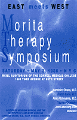
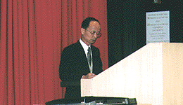
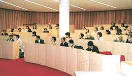
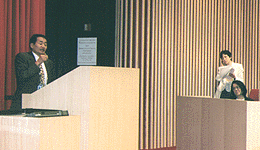

ニューヨークで初めて森田療法シンポジウムが開催!

去る5月2日、米国・ニューヨークにて初めて森田療法シンポジウムが開催されました。米国では、当財団でもご活躍のD.レイノルズ先生がおられますが、こうした公式な場での森田療法そのものの紹介を兼ねたシンポジウムは初めてとなります。 今回は以前から、生きがい療法でご活躍の伊丹仁朗先生からのご紹介により、米国・医療ソーシャルワーカー・ジーン・リーベンバーグ女史のコーディネートで開催される運びとなりました。
- シンポジウムは約100名の方が出席され、なごやかな雰囲気の中、質問など活発な意見交換がなされたようです。
米国では本来の神経療法という側面より、いわば、がん患者の心のケアや健康な人の生きる指針として注目され、活用されているようです。 - 開催場所：コーネル医科大学・ウェイル講堂
- 開催日時：1998年5月2日（土）午前10時〜午後4時
- 出席者 ：約100名
- 主 催 ：メリディアン・メディカル・グループ
（J.リーベンバーク C.S.W./Rチャン MD） - 演題内容：
- 森田療法：その理論と実際
〜浜松医大名誉教授 大原健士郎 - 入院療法における森田療法の臨床的側面
〜三島森田病院医師 内山 彰 - 森田療法と私
〜当財団理事長（現会長）岡本常男 - 癌患者に対する森田療法の応用
〜生きがい療法主宰 伊丹仁
- 森田療法：その理論と実際
シンポジウム開催風景



各先生への質問と回答集
| スローン・ケタリング・ガンセンターCSW | ジーン・リーベンバーグ先生への 質問と回答 |
| 生きがい療法主宰 | 伊丹仁朗先生への質問と回答 |
| 公益財団法人メンタルヘルス岡本記念財団理事長 （現会長） | 岡本常男先生への質問と回答 |
| 浜松医科大学名誉教授 | 大原健士郎先生への質問と回答 |
| 三島森田病院医師 | 内山彰先生への質問と回答 |
「森田療法」米で実践
がん治療では米国の先頭を行くニューヨークのスローンケタリング記念がんセンターのソシアルワーカー、ジーン・リベンバーグさんは、不安に陥りがちな患者の心をいやすために日本独自の「森田療法」を実践している。
東京慈恵会医大教授だった森田正馬博士が1920年頃確立した精神療法で、不安も悩みも「あるがまま」に受け入れ、日常生活を大事にこなすというのが基本理念。
「米国では、小さい頃から常に将来の自分の理想像を描き、それに向かって努力するよう求められる。だから自分の未来は長くないとわかったがん患者は、生きる意味を見失いがちです。あるがままでよいという考え方は大きな救いになります」
偶然、本屋で森田療法の本を見つけた。「それを読んで、まず自身が救われた」。この療法に沿いつつ悩みを聞いた患者は7年間でざっと6000人にのぼる。定期的に開く勉強会には30人ほどが通ってくるという。
（97年2月12日 朝日新聞/夕刊）